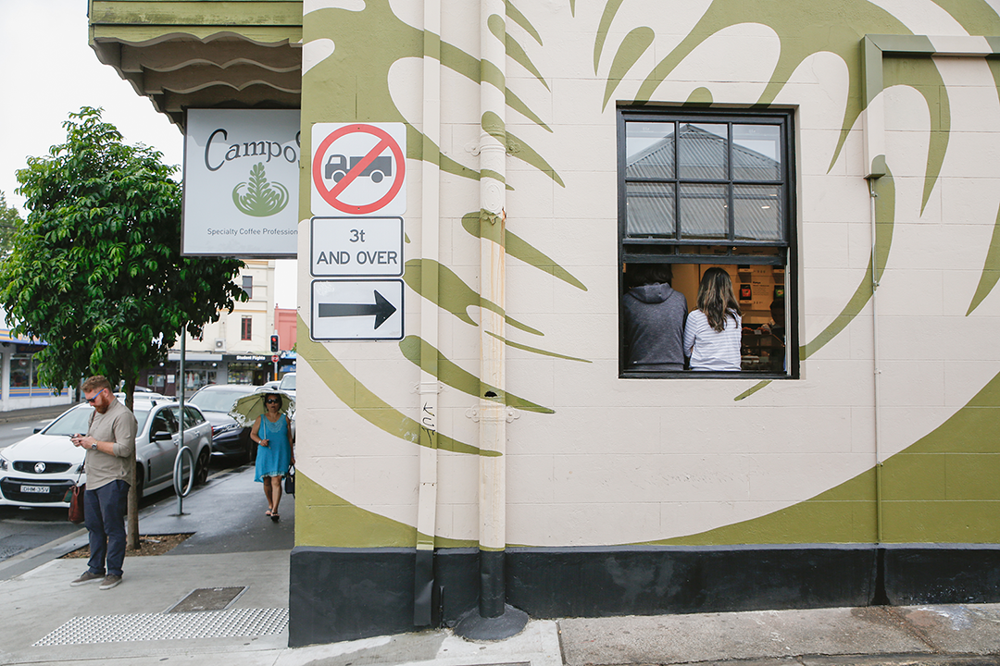
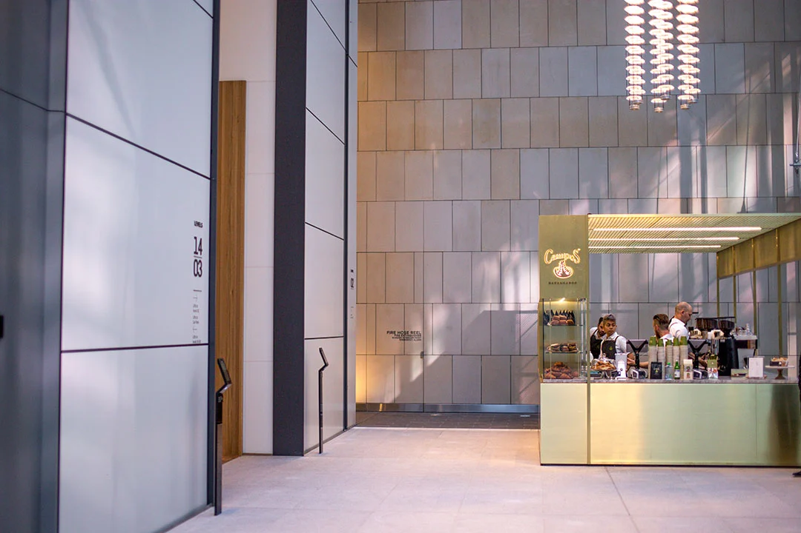
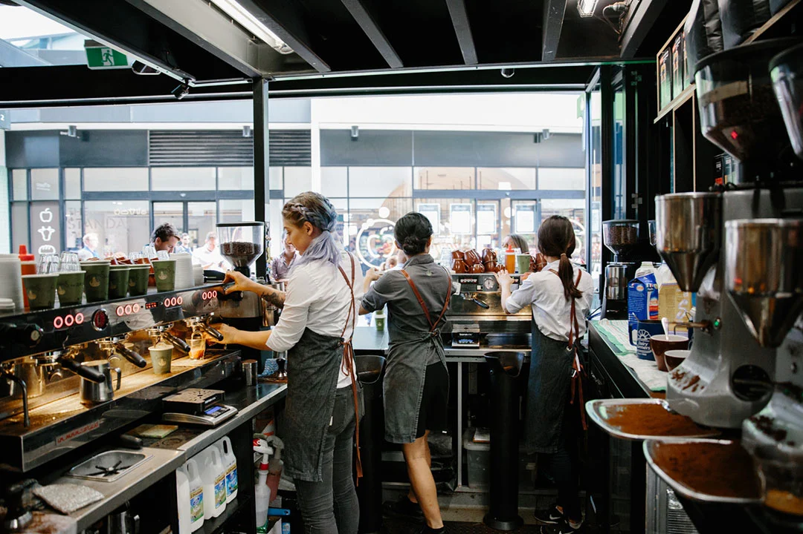

If you have been in a COVID-19 impacted location, please do not enter these premises for the safety of other patrons. Thank you for your consideration!
Sugar and Smiles is a part of Sydney Restaurant Group, established by well-recognised and respected Sydney restaurateur, Andy Anderson in the year 2000. Each venue is one of a kind, capturing the essence of contemporary Sydney dining. From two hatted fine dining to stunning waterfront views and relaxed cafe fare, the group offers a range of restaurant experiences to suit any occasion.
Our coffee beans are all sourced naturally and ethically, ground in the cafe itself to ensure you get the best, freshest coffee. Throughout the year, our skilled partners work hard to cultivate only the best coffee beans from their trees. When it comes time to harvest, the cherries are carefully picked only when they’re perfectly ripe. This maximizes their natural flavours, sweetness, and body.
Locations
|  |  |  |
|---|---|---|
| Baulkham Hills | Hornsby | Parramatta |
| 34-50 Old Northern Rd, Baulkham Hills NSW 2153 | 236 Pacific Hwy, Hornsby NSW 2077 | shop 8/45 Macquarie St, Parramatta NSW 2150 |